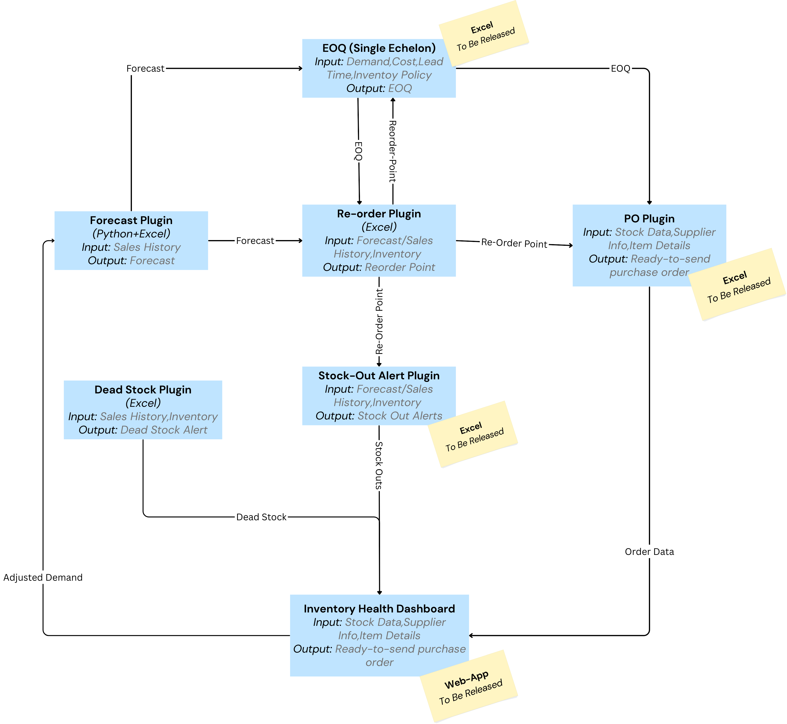

Upstrail Tool Library
A collection of free, Excel-based tools for supply chain planners.
📦 Dead Stock Tracker (v1.1)
This Excel plugin helps planners identify slow-moving or unsold SKUs using aging categories and recommended actions. Includes a full template, protected macros, and export options.
📊 Reorder Quantity Suggestor (v1.1)
This Excel plugin helps planners determine when and how much to reorder using reorder point logic, forecast or sales-based demand, and EOQ overrides. It’s lightweight, Excel-native, and fully customizable.
📈 Forecast Pro (v1.1)
This Excel tool uses Python for robust sales and demand forecasting. Built for planners needing reliable, flexible, and easy-to-use forecasting inside Excel.
Note: File is hosted externally due to size.
Plugins Network
The Upstrail plugins are designed to work in sync to give you the best results. Use the 'Forecast Pro' to generate a demand forecast, feed that into the 'Reorder Quantity Suggestor' to calculate your reorder points, and then use the 'Dead Stock Tracker' to identify any slow-moving inventory. This creates a seamless workflow for your planning process.
